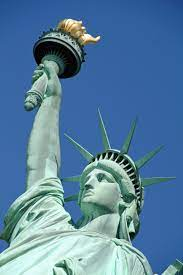

Broadly speaking, liberty is the ability to do as one pleases, or a right or immunity enjoyed by prescription or by grant (i.e. privilege). It is a synonym for the word freedom. In modern politics, liberty is the state of being free within society from control or oppressive restrictions imposed by authority on one's way of life, behaviour, or political views. In philosophy, liberty involves free will as contrasted with determinism. In theology, liberty is freedom from the effects of "sin, spiritual servitude, [or] worldly ties". Sometimes liberty is differentiated from freedom by using the word "freedom" primarily, if not exclusively, to mean the ability to do as one wills and what one has the power to do; and using the word "liberty" to mean the absence of arbitrary restraints, taking into account the rights of all involved. In this sense, the exercise of liberty is subject to capability and limited by the rights of others. Thus liberty entails the responsible use of freedom under the rule of law without depriving anyone else of their freedom. Freedom is more broad in that it represents a total lack of restraint or the unrestrained ability to fulfill one's desires. For example, a person can have the freedom to murder, but not have the liberty to murder, as the latter example deprives others of their right not to be harmed. Liberty can be taken away as a form of punishment. In many countries, people can be deprived of their liberty if they are convicted of criminal acts.
